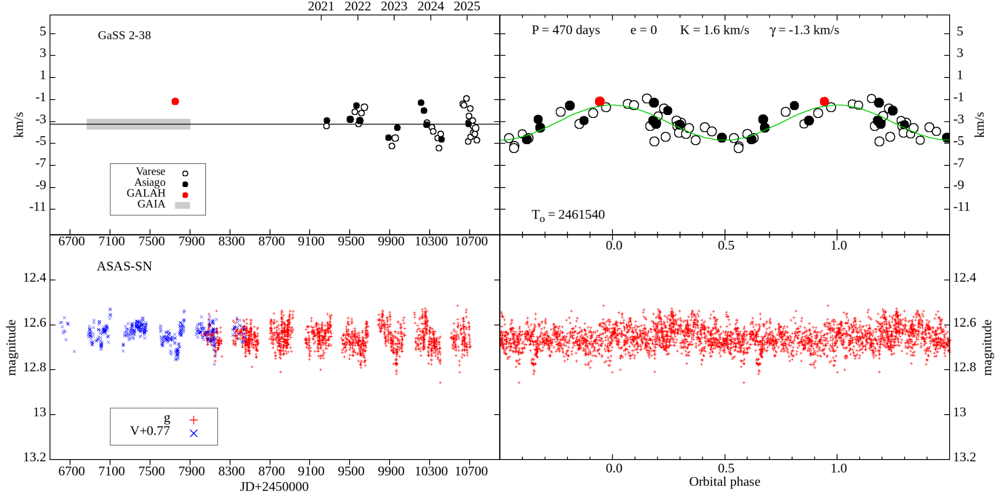

派手な輝線を持たない連星を探す
共生星には、白色矮星表面の核燃焼が強い光を放つ状態と、主として降着が光を生む状態があります。後者でも降着が弱ければ、伴星の兆候は巨星の光に埋もれます。これまでの目立つ天体に偏った標本だけで銀河系の総数を推定すると、こうした集団を取り逃がす可能性があります。
著者らは、脈動していないM型巨星のうち、水素のHα線に余剰放射がある天体をGalahから選びました。ただし、Hαの余剰だけで降着と断定したわけではありません。2021〜2025年に544夜の高分散分光を行い、短時間の不規則な明るさの変化、紫外線超過、Swift衛星によるX線など、異なる証拠を重ねています。
軌道運動と小さな変動を確かめる
巨星の吸収線から測る視線速度は、明るさの弱い伴星を調べる手がかりになります。44天体のうち22個で信頼できる分光軌道を得て、さらに8個には暫定的な軌道を求めました。下図のGaSS 2-38は、その具体例です。測定時刻のままの速度変化と、軌道周期で折り重ねた変化を比べ、可視光の周期的変動も確認しています。
降着に伴う短時間のちらつきは、近くの比較星と明るさの散らばりを比較して調べました。ある日にちらつきが検出されなくても、降着が起きていないと即断できません。変動する現象は、観測する時期によって姿を変えるからです。紫外線とX線の検査も合わせ、著者らは中性子星伴星を除外し、既知の共生星と同様、白色矮星への降着という解釈を支持しています。


図を選ぶと原寸画像を開けます。
弱い降着ほど、長く見続ける必要がある
推定された平均降着光度の5〜95パーセンタイル範囲は太陽の0.25〜2.4倍です。ここでいう光度は赤色巨星を含む系全体の明るさではなく、物質が落ち込む過程の放射です。観測される降着レベルには最大約20倍の変動があり、一度だけの測定で候補を選別すると、弱い状態を見逃したり、特徴のない巨星と分類したりするおそれがあります。
前報の33天体と合わせた新発見は77個に達します。著者らは、低降着状態が共生星の寿命の大きな部分を占める可能性を論じ、銀河系に存在する総数を考えるうえで、この集団が重要だと位置づけています。ただし、今回の44個が銀河系全体を偏りなく代表していると証明されたわけではありません。
光度の較正と、連星進化へのつながり
降着光度は直接すべての波長を積分した値ではなく、Hα光度との経験的関係から推定されています。その関係は元来、原始星の降着円盤をもとに較正されたもので、共生星専用の十分な再較正はまだ困難です。著者らは同時期の可視光・紫外線測定で関係を点検していますが、この仮定と不確実性は数値と一緒に読む必要があります。
共生星はIa型超新星の起源などにも関係しますが、新たな44系すべてが将来超新星になるという結論ではありません。まず必要なのは、目立たない降着状態の実態と、その状態が続く時間を知ることです。この研究は、弱い信号を長期間、多波長で確かめることで、連星進化を考えるための観測標本を広げています。